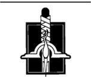

Gölge'ye Karşı
Rand koşarken zemin yükselmeye başladı, ama korku bacaklarına güç vermişti ve çiçeklenen çalıların, yabangülü sarmaşıklarının arasından geçerek, taç yapraklarını saçarak, dikenlerin giysilerini ve derisini yırtmasına aldırmadan uzun adımlarla koşmaya devam etti. Moiraine artık çığlık atmıyordu. Sanki çığlıklar sonsuza dek devam etmişti, her biri bir öncekinden daha gırtlak paralayıcıydı, ama Rand yalnızca birkaç dakika sürdüğünü biliyordu. Aginor onun peşine düşmeden önce, birkaç dakika. Rand Aginor'un kendisini takip edeceğini biliyordu. Yalnız'ın boş gözlerinde, dehşet ayaklarını koşmaya zorlamadan önceki saniyede kendinden eminliği görmüştü.
Arazi gittikçe dikleşti, ama Rand çalılara tutunarak koşmaya devam etti. Taşlar, toprak, yapraklar ayaklarının altında yamaçtan aşağı yağdı, sonunda zemin çok dikleşince elleri ve dizleri üzerinde emeklemeye başladı. İleride, yukarıda zemin biraz düzeliyordu. Nefes nefese son birkaç adımı aştı, ayağa kalktı ve yüksek sesle ulumayı arzulayarak durdu.
On adım ötesinde tepe dimdik alçalıyordu. Oraya varmadan ne göreceğini biliyordu, ama yine de her biri bir öncekinden daha ağır, bir yol, bir patika, herhangi bir şey bulmayı umarak o adımları aştı. Kenarda dik, otuz metrelik bir uçuruma, rendelenmiş ahşap gibi pürüzsüz, taş bir duvara baktı.
Bir yol olmalı. Geri dönüp bir yol bulacağım. Geri dönüp...
Döndüğü zaman Aginor oradaydı, zirveye yeni ulaşmıştı. Yalnız güçlük çekmeden, dik yamaçta düz zeminmiş gibi rahatlıkla yürüyerek tepeye çıktı. Derine gömülmüş gözleri o gergin parşömen yüzden, yakarcasına Rand'a baktı; bir şekilde öncekinden daha az kuru görünüyordu, daha etliydi, sanki Aginor bir şeyle iyice beslenmiş gibiydi.
"Ba'alzamon seni Shayol Ghul'e getirenlere ölümlülerin hayallerinin ötesinde ödüller verecek. Ama benim hayallerim hep diğer adamların ötesinde olmuştur ve ölümlülüğü binyıllar önce geride bıraktım. Karanlığın Yüce Efendisi'ne canlı ya da ölü hizmet etmenin ne farkı var? Gölge'nin sınırlarının içinde hiç. Neden gücü seninle paylaşayım? Neden önünde diz cokeyim? Lews Therin Telamon'la Hizmetkarlar Salonu'nda yüzleşen ben. Sabahın Efendisi'ne tüm kudretimle saldıran ve onun her darbesine darbeyle karşılık veren ben. Hiç sanmıyorum."
Rand'ın ağzı toz gibi kurudu; dili Aginor kadar büzülmüş gibi geldi. Uçurumun kenarı topuklarının altında gıcırdadı, taşlar aşağıya döküldü. Rand arkasına bakmaya cesaret edemiyordu, ama taşların dik duvarda, iki santim daha gerilerse kendi bedeninin sıçrayacağı gibi sıçradığını işitti. Yalnız'dan uzaklaşmakta, gerilemekte olduğunu ilk kez fark etti. Derisi ürpermeye başladı, öyle ki bakışlarını Yalnız'dan alabilirse, bakarsa kıpırdadığını göreceğini sandı. Ondan kurtulmanın bir yolu olmalı. Kaçmanın bir yolu! Olmak zorunda! Bir yol!
Aniden bir şey hissetti, gördü, ama aslında orada olmadığını biliyordu. Aginor'un arkasında bir halat uzanıyordu. En saf bulutların arasından görülen güneş gibi beyaz, bir demircinin kolundan kalındı ve Yalnız'ı biliş ötesindeki, uzak bir şeye, Rand'dan bir kol uzakta bir şeye bağlıyordu. Halat yürek gibi atıyordu ve her atışta Aginor güçleniyor, etleniyor, Rand kadar uzun boylu ve güçlü, Muhafız'dan daha sert, Afet'ten daha ölümcül bir adam oluyordu. Ama o halatın yanında Yalnız yok gibiydi. Her şey halattı. Mırıldanıyordu. Şarkı söylüyordu. Rand'ın ruhunu çağırıyordu. Parlak bir uzantı yükseldi, süzüldü, Rand'a dokundu ve o inledi. İçini ışık doldurdu, yakması gereken ısı kemiklerindeki mezar soğukluğunu giderir gibi ısıttı. Uzantı kalınlaştı. Uzaklaşmak zorundayım!
"Hayır!" diye haykırdı Aginor. "Sen alamazsın! Hepsi benim!"
Ne Rand, ne Yalnız kıpırdadı, ama tozun içinde yuvarlanıyormuş gibi mücadele ettiler. Aginor'un artık kurumuş görünmeyen, yaşlı görünmeyen, en iyi yıllarını yaşayan güçlü bir adamın yüzü gibi görünen yüzünde ter damlaları boncuklandı. Rand halatın atışı ile, dünyanın yürek atışı ile bir oldu. Varlığını doldurdu. Işık zihnini doldurdu, ta ki onun benliği için yalnızca tek bir köşe kalana kadar. Rand o köşenin çevresini boşlukla sardı; boşluğun içine sığındı. Uzağa!
"Benim!" diye haykırdı Aginor. "Benim!"
Rand'ın içi ısındı, güneşin sıcaklığı, güneşin parlaklığı, patlayan, korkunç bir ışık, bir Işık parlaklığı ile. Uzağa!
"Benim!" Aginor'un ağzından alevler fışkırdı, gözlerinden ateşten mızraklar gibi fırladı ve o çığlık attı.
Uzağa!
Ve Rand artık tepede değildi. Onu dolduran Işık ile titriyordu. Zihni çalışmıyordu; ışık ve ısı onu kör etmişti. Işık. Boşluğun ortasında, Işık onu körleştirmiş, huşu ile sersemletmişti.
Geniş bir dağ geçidinde duruyordu, Karanlık Varlık'ın dişleri gibi çentikli tepelerle çevrelenmişti. Bu gerçekti; oradaydı. Çizmelerinin altındaki kayaları; yüzündeki buz gibi esintiyi hissetti.
Çevresinde savaş vardı, ya da savaşın kendisine yakın duran ucu. Zırhlı atların üzerindeki zırhlı adamlar, parlak çelikleri tozlanmış, bir ucu sivri baltalarını ve tırpan gibi kılıçlarını savuran Trolloclara saldırıyorlardı. Atları ölmüş bazı adamlar yerde savaşıyordu, binicileri ölmüş atlar boş eyerlerle savaşın içinde koşturuyorlardı. Soluklar hepsinin arasında dolanıyor, siyah binekleri nasıl koşarsa koşsun gece siyahı pelerinleri kıpırdamıyor, ışık yiyen kılıçlarını savurdukları zaman insanlar ölüyordu. Sesler Rand'ın üzerine çullanıyor, onu boğazından yakalayan tuhaflıktan yansıyordu. Çeliğe çarpan çelik, insanların ve çabalayan Trollocların nefesleri ve homurdanmaları, insanların ve ölen Trollocların çığlıkları. Kargaşanın içinde, toz dolu havada sancaklar dalgalanıyordu. Fal Dara'nın Siyah Şahin'i, Shienar'ın Beyaz Geyiği ve başkaları. Ve Trolloc sancakları. Çevresindeki dar alanda Dha'vcl'un boynuzlu kafataslarını, Ko'bal'ın kan kırmızı üç çatallı mızrağını, Dhai'mon'un demir yumruğunu gördü.
Ama burası gerçekten de savaşın arka ucuydu, insanlar ve Trolloclar toparlanmak için duraklarken ayrılıyorlardı. Kimse son birkaç darbeyi savurup ayrılırken, sendeleyerek geçidin uçlarına koşarken Rand'a dikkat etmedi.
Rand, kendini yeniden gruplanan, flamaları parlak mızrak uçlarında dalgalanan insanların bulunduğu tarafa bakarken buldu. Yaralı adamlar eyerlerinde sallanıyordu. Binicisiz atlar şahlanıyor, dörtnala koşuyordu. Bir çarpışmaya daha dayanamayacakları açıktı, son saldırıya hazırlandıkları kadar açık. Bazıları şimdi onu görüyordu; insanlar üzengilerde doğrulup ona işaret etti. Bağırışları Rand'a minik düdükler gibi geldi.
Sendeleyerek döndü. Karanlık Varlık'ın güçleri geçidin diğer ucunu doldurmuştu. Shienar ordusunu cüceleştiren Trolloc yığınlarının daha da kararttığı dağ yamaçları siyah kargılarla, mızrak uçları ile dolup taşıyordu. Yüzlerce Soluk sürünün önünde at sürüyor, onlar geçerken Trollocların vahşi, hayvansı yüzleri korku ile dönüyor, dev gövdelerini yol açmak için geri çekiyorlardı. Yukarıda, Draghkarlar deri kanatlar üzerinde sarmallar çiziyor, çığlıkları rüzgâra meydan okuyordu. İki, üç. Altı tanesi tiz çığlıklar atarak Rand'a doğru daldı.
Rand onlara bakıyordu. İçi ısıyla doldu, dokunduğu güneşin yakıcı sıcaklığıyla. Draghkarları, insanlıkla ilgisi olmayan kanatlı bedenlerin üzerindeki solgun yüzlerinden bakan ruhsuz gözleri açıkça görebiliyordu. Korkunç bir ısı. Çatırdayan sıcaklık.
Berrak gökyüzünden şimşek indi, her darbe kısa ve keskin, gözleri kavuran şimşekler, her darbesi siyah, kanatlı şekillere inen şimşekler. Av çığlıkları ölüm çığlıklarına dönüştü, kömürleşmiş şekiller gökyüzünden düştü, onu yine temiz bıraktı.
Isı. Işık'ın korkunç sıcaklığı.
Rand dizlerinin üzerine çöktü; yanaklarında cızırdayan gözyaşlarını hissedebildiğini düşündü. "Hayır!" gerçekliğe tutunabilmek için otları kavradı; otlar aleve boğuldu. "Lütfen, haaayıııır!"
Sesiyle rüzgâr yükseldi, sesiyle uludu, geçit boyunca kükredi, alevleri kırbaçlayarak, bir attan daha hızlı, Rand'dan Trolloclara koşturan bir ateş duvarı yarattı. Ateş Trollocları kavurdu ve dağlar çığlıkları ile, rüzgâr ve Rand'ın sesi kadar yüksek çığlıklar ile sarsıldı.
"Sona ermeli!"
Yumruğu ile yeri dövdü ve toprak bir gong gibi çınladı. Elleri kayalık zeminde yaralandı ve yeryüzü sarsıldı. Önündeki arazide topraktan dalgalar yayıldı, yükseldi, Trollocların ve Solukların tepesine dikildi, toynaklı ayaklarının altında dağ parçalanırken üstlerinde kırıldı. Trolloc ordusunun üzerinden kaynayan bir et ve moloz yığını geçti. Ayakta kalan hâlâ kuvvetli bir orduydu, ama artık sayıları insan ordusunun iki katı bile değildi ve korku ve kargaşa içinde çalkalanıyordu.
Rüzgâr öldü. Çığlıklar öldü. Toprak durdu. Toz ve duman geçitte burgaçlanarak Rand'ı sardı.
"Işık seni kör etsin, Ba'alzamon! Bu sona ermeli!"
BURADA DEĞİL.
Kafatasını titreştiren, Rand'ın düşüncesi değildi.
BEN BU İŞTE YOKUM. EĞER YAPACAKSA, YAPILMASI GEREKENİ YALNIZCA SEÇİLMİŞ OLAN YAPABİLİR.
"Nerede?" Rand söylemek istemiyordu, ama kendini durduramadı. "Nerede?"
Onu çevreleyen pus dağıldı, duman ve toz duvarlarının içinde on kulaç yüksekliğinde temiz, berrak havadan bir kubbe bıraktı. Önünde basamaklar yükseliyordu, her biri tek başına, desteksiz duruyor, güneşi karartan bulanıklığa uzanıyordu.
BURADA DEĞİL.
Sislerin içinden, dünyanın diğer ucundan gelir gibi bir haykırış yükseldi. "Işık bunu buyuruyor!" İnsan güçleri son saldırı için atılırken yer at nalları altında gürledi.
Boşluğun içinde, Rand'ın zihni bir anlığına paniğe kapıldı. Saldıran atlılar tozun içinde onu göremezdi; onu ezip geçeceklerdi. İçinde büyük bir parça sarsılan zemini kayda değmez önemsiz bir şey olarak görmezden geldi. Donuk öfke ayaklarını zorladı, ilk basamakları tırmandı. Sona ermeli!
Çevresini karanlık aldı, mutlak hiçliğin mutlak siyahlığı. Basamaklar hâlâ oradaydı, siyahlığın içinde, ayaklarının altında ve ötesinde asılı duruyordu. Dönüp baktığında arkasındakilerin yok olduğunu, solup çevresindeki hiçliğe dönüştüğünü gördü. Ama halat hâlâ oradaydı, arkasında uzanıyor, parlak çizgi uzakta küçülüyor, yok oluyordu. Önceki kadar kalın değildi, ama hâlâ yürek gibi atıyor, ona güç pompalıyor, yaşam pompalıyor, onu Işık ile dolduruyordu. Rand tırmandı.
Sonsuza dek tırmanmış gibi geldi. Sonsuza dek ve yalnızca birkaç dakika. Zaman hiçliğin içinde donup kaldı. Zaman daha hızlı aktı. Tırmandı, tırmandı ve aniden önünde bir kapı belirdi. Yüzeyi kaba, eski ve kıymık kıymıktı, çok iyi hatırladığı bir kapıydı. Ona dokundu ve kapı patlayarak paramparça oldu. Parçalar düşmeye devam ederken içinden geçti, ahşap parçaları omuzlarından düştü.
Oda da hatırladığı gibiydi, balkonun ötesinde çılgın, çizgi çizgi gökyüzü, erimiş duvarlar, cilalı masa, kükreyen, ısı vermeyen alevleri ile korkunç şömine. O şömineyi oluşturan, işkence içinde kıvranan, sessizlik içinde haykıran yüzlerin bazıları, hatırlaması gerekirmiş gibi anılarını çekiştirdi, ama Rand boşluğa sarındı, kendi içindeki yoklukta süzüldü. Yalnızdı. Duvardaki aynaya baktığında, oradaki yüzü sanki kendisiymiş gibi açıktı. Boşlukta dinginlik vardır.
"Evet," dedi Ba'alzamon şöminenin önünden, "Aginor'un kendi açgözlülüğüne yenileceği aklıma gelmişti. Ama sonuçta hiç fark etmiyor. Uzun bir arayıştı, ama artık sona erdi. Buradasın ve ben seni tanıyorum."
Işık'ın ortasında boşluk, boşluğun ortasında Rand süzülüyordu. Evinin toprağına uzandı ve sert, teslim olmayan ve kuru kayaları, yalnızca güçlülerin, dağlar kadar sağlam olanların hayatta kaldığı merhametsiz taşları hissetti. "Kaçmaktan bıktım." Sesinin bu kadar sakin çıkmasına şaşırmıştı. "Dostlarımı tehdit etmenden bıktım. Artık kaçmayacağım." Ba'alzamon'un da bir halatı olduğunu gördü. Kendisininkinden çok daha kalın, siyah bir halat, o kadar geniş ki insan bedeni yanında cüce kalır. Ama Ba'alzamon'un yanında halat cüce kalıyordu. O siyah damarın her atışı ışığı tüketiyordu.
"Kaçmanın ya da kalmanın bir fark yaratacağını mı sanıyorsun?" Ba'alzamon'un ağzındaki alevler kahkaha attı. Ocaktaki yüzler efendilerinin neşesi karşısında ağladı. "Benden defalarca kaçtın ve her seferinde seni yakaladım, gözyaşlarının tatlandırdığı gururunu yedirdim sana. Defalarca direndin ve savaştın, sonra yenilmişlik içinde süründün, merhamet dilendin. Yalnızca tek bir seçeneğin var, solucan: ayaklarımın dibinde diz çok ve bana iyi hizmet et. O zaman sana tahtların üzerinde güç bahşederim; ya da Tar Valon'un kuklası ol ve zamanın tozuna dönüşürken çığlıklar at."
Rand kaçış yolu arar gibi arkasına, kapıya baktı. Bırak Karanlık Varlık öyle düşünsün. Kapının ötesinde hâlâ hiçliğin karanlığı vardı, bedeninden uzanan parlak halat ile yarılmıştı. Ve Ba'alzamon'un kalın halatı da oraya uzanıyordu, o kadar siyahtı ki, arkasındaki karanlık kararmış gibi görünüyordu. İki halat zıt zamanlarda yürek damarları gibi atıyor, ışık karanlık dalgalarına zar zor dayanabiliyordu.
"Başka seçenekler de var," dedi Rand. "Desen'i Çark dokur, sen değil. Bana kurduğun her tuzaktan kaçtım. Soluklarından, Trolloclarından, Karanlıkdostlarından kaçtım. Buraya kadar izini sürdüm, yolumun üzerinde ordunu yok ettim. Desen'i sen dokumuyorsun."
Ba'alzamon'un gözleri iki fırın gibi kükredi. Dudakları kıpırdamadı, ama Rand Aginor'a haykırdığı bir küfür duyduğunu düşündü. Sonra ateşler öldü ve o sıradan insan yüzü ona öyle gülümsedi ki, Işık'ın sıcaklığının içinde bile ürperdiğini hissetti.
"Başka ordular toplanabilir, seni aptal. Hayal bile edemeyeceğin ordular gelecek daha. Hem, sen benim izimi sürdün, ha? Seni, kayanın altında sürünen kurtçuk, izimi sürdün, ha? Doğduğun gün yolunu çizdim senin, seni ya mezarına götürecek, ya buraya getirecek yolu. Aiel'in kaçmasına izin verdim, hayatta kalacak ve yıllar boyunca yankılanacak sözleri söyleyecek biri. Uzakgezgini Jain, bir kahraman," sözcüğü alayla büktü, "bir aptal gibi boyadım ve benden kurtulduğunu düşündürerek Ogierlere yolladım. Seni bulmak için karınlarının üzerinde kıvranarak dünyayı araştıran Kara Ajahlar. Ben ipleri çekerim ve Amyrlin Makamı dans eder ve olayları kendisinin kontrol ettiğini düşünür."
Boşluk titredi; Rand telaşla yeniden sağlamlaştırdı onu. Her şeyi biliyor. Yapmış olabilir. Söylediği gibi olmuş olabilir. Işık boşluğu ısıttı. Kuşku haykırdı ve susturuldu, ve sonunda yalnızca tohumu kaldı. Rand tohumu gömmek mi istiyor, büyütmek mi, karar veremeden mücadele etti. Boşluk öncekinden küçük, sağlamlaştı ve Rand dinginlik içinde süzüldü.
Ba'alzamon hiçbir şeyi fark etmemiş gibiydi. "Hayatta kalmanın ya da ölmenin, sen ve sahip olabileceğin güç dışında hiçbir şey için önemi yok. Bana ya sen hizmet edeceksin, ya da ruhun. Ama önümde ölü değil canlı diz çökmeni tercih ederim. Köyüne bin Trolloc gönderebilecekken, tek bir öbek gönderdim. Sen uyurken yüz tanesi gelebilecekken tek bir Karanlıkdostu geldi. Ve sen, aptal, hepsini bilmiyorsun bile, ne ileridekileri, ne geridekileri, ne de yanındakileri. Sen benimsin, hep benim oldun, tasma taktığım köpeğimsin ve seni buraya ya sahibinin önünde diz çökmen, ya da ölmen ve ruhunun diz çökmesine izin vermen için getirdim."
"Seni inkar ediyorum. Üzerimde gücün yok ve ölü ya da canlı, önünde diz çökmeyeceğim."
"Bak," dedi Ba'alzamon. "Bak." Rand gönülsüzce başını çevirdi.
Orada, Egwene duruyordu, solgun ve korkmuş, saçlarında çiçeklerle Nynaeve. Ve bir kadın daha, Hikmet'ten biraz daha yaşlı, kara gözlü ve güzel, İki Nehir kıyafetleri içinde, elbisesinin boynuna işlenmiş çiçekler ile bir kadın.
"Anne?" diye nefes verdi Rand ve kadın ümitsiz bir gülümseme ile gülümsedi. Annesinin gülümsemesi. "Hayır! Annem öldü ve diğer ikisi buradan uzakta, güvende. Seni reddediyorum!" Egwene ve Nynaeve bulanıklaştı, sis olup sürüklendi ve dağıldı. Kari al'Thor, gözleri korku ile iri iri, yerinde kaldı.
"En azından o," dedi Ba'alzamon, "benim ve ona dilediğimi yaparım."
Rand başını iki yana salladı. "Seni reddediyorum." Sözcükleri zorla telaffuz etti. "O öldü ve senden uzakta, Işık'ta güvende."
Annesinin dudakları titredi. Yanaklarından aşağı gözyaşları aktı ve her biri Rand'ın içini zehir gibi yaktı. "Mezarın Efendisi eskiden olduğundan daha güçlü, oğlum," dedi. "Kolu daha uzun. Yalanların Babası dikkatsiz ruhlar için bal gibi bir dile sahip. Oğlum. Benim biricik, sevgili oğlum. Elimden gelse seni kurtarırdım, ama artık o benim efendim, onun kaprisleri benim varlığımın yasası. Ona itaat etmekten, beğenisi için yaltaklanmaktan başka çarem yok. Beni yalnızca sen özgür kılabilirsin. Lütfen, oğlum. Lütfen bana yardım et. Bana yardım et. Bana yardım et! LÜTFEN!"
Solgun ve ifadesiz, çıplak yüzlü Soluklar çevresinde kapanırken ciğerleri paralanırcasına haykırdı. Giysileri kansız eller, kerpetenler, mengeneler kullanan, acıtan, yakan, kadının çıplak etini kırbaçlayan eller tarafından paralandı. Kadının çığlıklarının sonu yoktu.
Rand'ın çığlıkları kadınınkileri yankıladı. Boşluk zihninde kaynadı. Eli kılıcına gitti. Balıkçıl işaretli kılıç değil, ışıktan bir kılıç, Işık'ın kılıcı. Onu kaldırırken ucundan alev alev, beyaz bir şimşek fırladı, kılıcın kendisi uzanmış gibi göründü. En yakındaki Soluk'a düştü ve kör edici bir parlaklık odayı doldurdu, Yarı-insanların içinden, kağıdın arkasından görünen mum gibi ışıdı, onları yaktı, Rand'ın gözlerini körleştirdi.
Parlaklığın ortasından, bir fısıltı işitti. "Teşekkür ederim, oğlum. Işık. Kutsal Işık."
Şimşek soldu ve Rand odada Ba'alzamon ile yalnız kaldı. Ba'alzamon'un gözleri Kıyamet Çukuru gibi yanıyordu, ama kılıçtan, sanki Işık'ın kendisiymiş gibi kaçındı. "Aptal! Kendini yok edeceksin! Onu bu şekilde kullanamazsın, henüz olmaz! Ben sana öğretene kadar olmaz!"
"Sona erdi," dedi Rand, ve kılıcı Ba'alzamon'un siyah halatına savurdu.
Ba'alzamon, kılıç inerken, çığlık atmaya başladı, öyle ki, taş duvarlar sarsıldı, Işık kılıcı halatını keserken sonsuz uluması ikiye katlandı. Kesik uçlar gerilmiş gibi hızla birbirlerinden uzaklaştılar. Boşluğa uzanan uç uzaklaşırken büzülmeye başladı; diğeri Ba'alzamon'a çarptı, onu şömineye fırlattı. İşkence içindeki yüzlerin sessiz çığlıklarında kahkahalar vardı. Duvarlar sarsıldı, çatladı; zemin kabardı ve taş parçaları tavandan yere düştü.
Çevresindeki her şey ufalanırken, Rand kılıcı Ba'alzamon'un yüreğine doğrulttu. "Sona erdi!"
Kılıçtan ışık fışkırdı, eriyik, beyaz metal damlaları gibi, bir alev yağmuru şeklinde aktı. Ba'alzamon feryat ederek, kendini korumak için boşuna kollarını kaldırdı. Gözlerinde alevler haykırdı, taş patlarken başka alevlerle birleşti, çatlayan duvarların taşları, yarılan yerin taşları, tavandan yağan taşlar. Rand ona bağlı olan halatın inceldiğini hissetti, ta ki geriye parıltıdan başka bir şey kalmayana dek, ama ne yaptığını, nasıl yaptığını bilmeden, yalnızca bunun sona ermesi gerektiğini bilerek kendini zorladı. Sona ermeli!
Odayı ateş doldurdu, katı alevler. Ba'alzamon'un yaprak gibi büzüldüğünü görebiliyor, ulumasını duyabiliyor, kemiklerinde gıcırdayan çığlıklarını hissedebiliyordu. Alevler güneşten de parlak, saf, beyaz ışık oldu. Sonra iplikteki son ışıltı da yok oldu ve Rand sonsuz siyahlığın içinde düşmeye, Ba'alzamon'un uluması solmaya başladı.
Bir şey ona muazzam bir güçle çarptı, onu pelteye çevirdi, pelte sallandı, içeride kükreyen ateşlerle, sonsuzca yanan aç soğukla haykırdı.